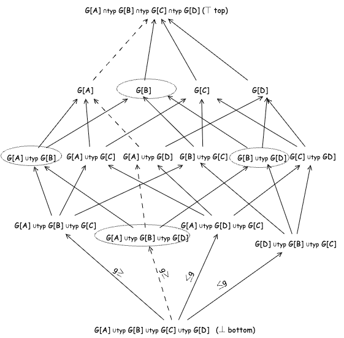

Grain theory and verification of three example data pipelines are mechanized in Lean 4, alongside a Lean type-class encoding of grain.
Abstract
Data pipelines fail silently when a transformation changes the grain of the data, the level of detail each element represents, without the designer intending it; fan traps and chasm traps are the familiar symptoms. Dimensional modeling has used grain informally since the 1990s. We define grain by irreducibility and isomorphism alone, with no appeal to functional dependencies, and compute it compositionally over products, sums and the inductive and coinductive fixed points, so it is defined on arrays, event streams and the other nested and recursive types where dependency theory has no referent, and the grain of a type's entity is its entity key, where collections of different grain integrate. Grain is more than a key: one structure under different declared grains denotes different things. The grain ordering is a partial order on types, axiomatized by Armstrong-style axioms whose completeness transfers on product types. For the relational algebra we prove inference rules, chief among them an equi-join theorem computing the exact, minimal grain. Grain projection commutes with transformation and grain lifts compose, and the algorithm CalcG decides pipeline grain-correctness at design time, from the schema alone, in time linear in the pipeline. The errors then follow from a single comparison: a grain the calculus computes, set against a grain the design intends, stands in exactly one relation to it in the grain ordering, and that position names the failure. Fan traps, dropped grain fields, ungrounded multi-version reads, wrong-grain aggregations and behavioral-class violations are the instances of this classification; chasm traps, a data-instance failure the theory does not model, are localized but not decided. The theory is mechanized in Lean 4.
Problem
Data pipelines fail silently when transformations unintentionally change the grain (level of detail) of data, producing fan traps, chasm traps and wrong-grain aggregations. Grain has only been an informal concept in dimensional modeling.
Approach
Grain is defined via irreducibility and isomorphism and computed compositionally over products, sums and inductive/coinductive types. Grain equality, ordering and incomparability relations are introduced, along with Armstrong-style axioms and relational-algebra inference rules, including an exact equi-join grain theorem. An algorithm, CalcG, checks pipeline grain-correctness from the schema in linear time. The theory and an example pipeline verification are mechanized in Lean 4, with additional encodings in Python/PySpark and Agda.

Figure 1. The bounded lattice of the \leq_{g} partial order relation for four types A , B , C , D .
Results
Fan traps, dropped grain fields, ungrounded multi-version reads and wrong-grain aggregations are classified as positions in the grain ordering and decided at design time. Chasm traps are localized but not decided. Lean 4 proofs verify the three pipeline alternatives from the running example, and 100 SQL equi-join experiments validate the inference formulas.